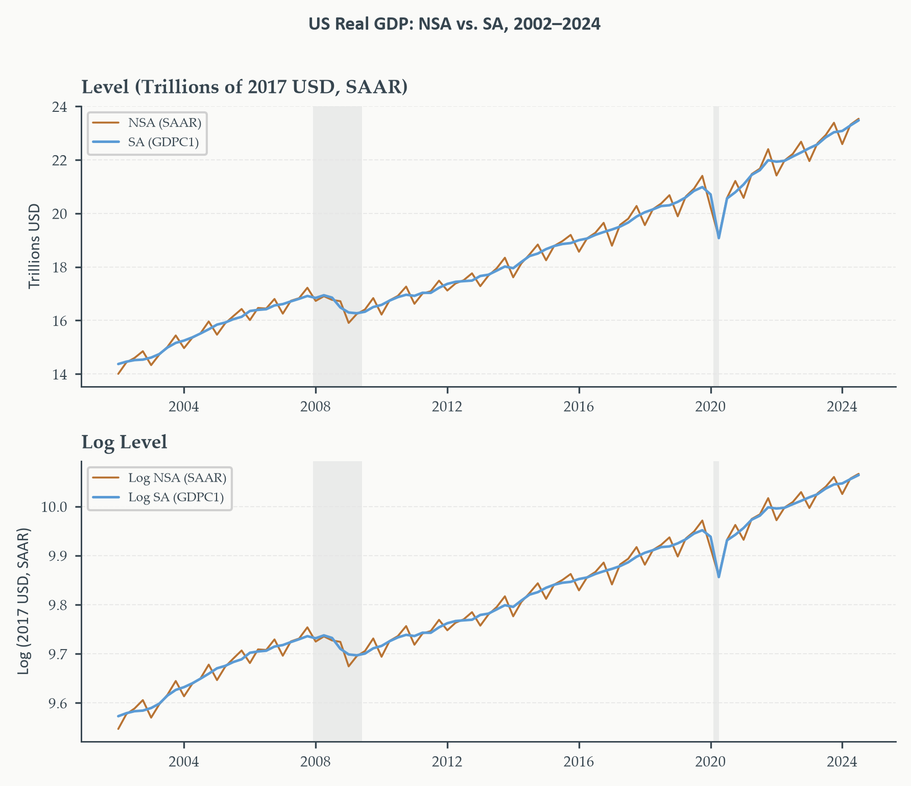
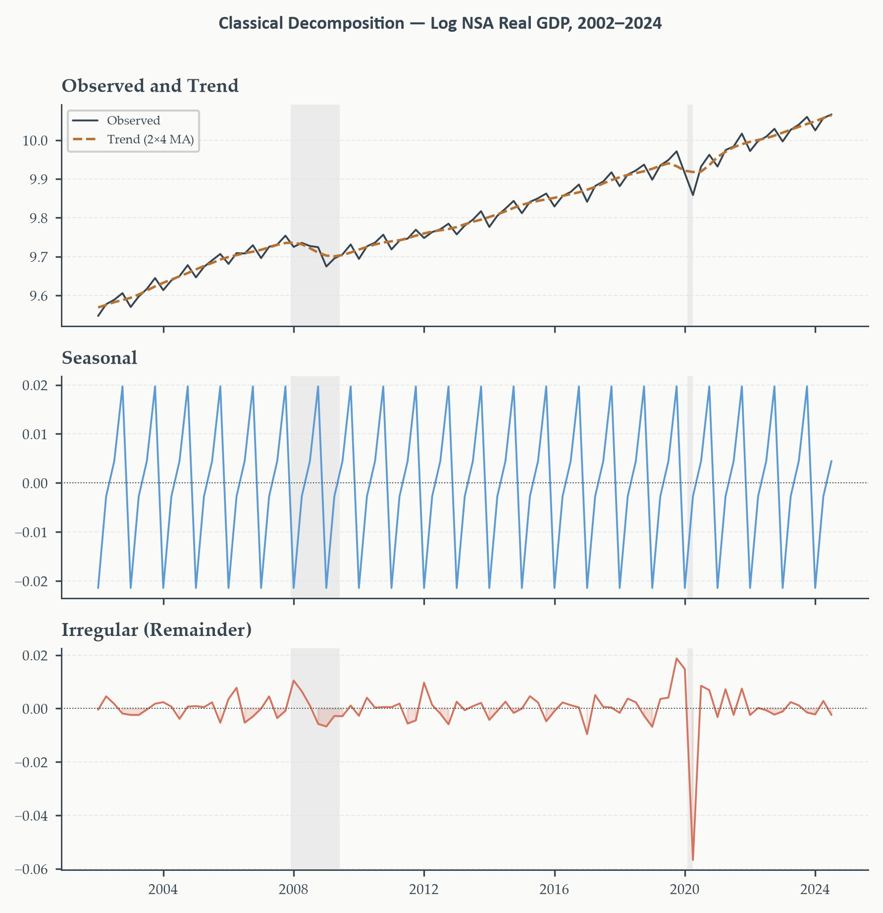
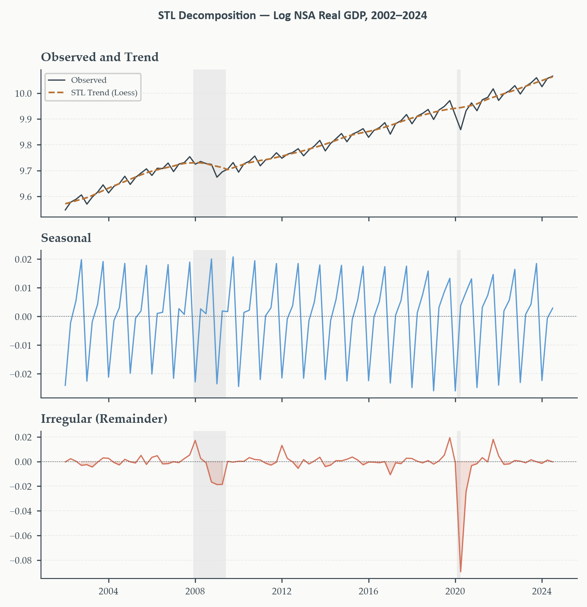
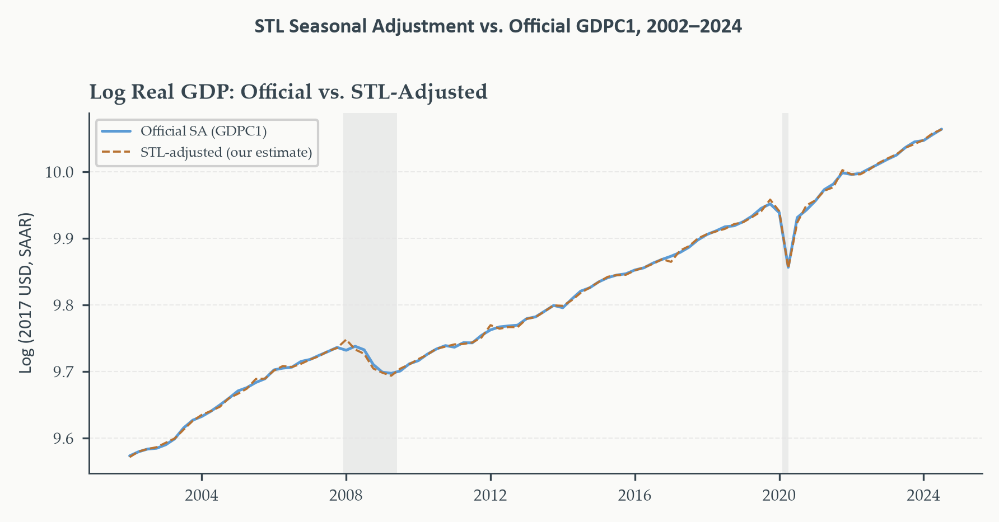
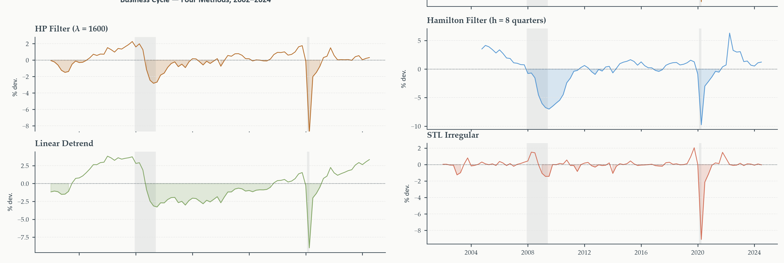
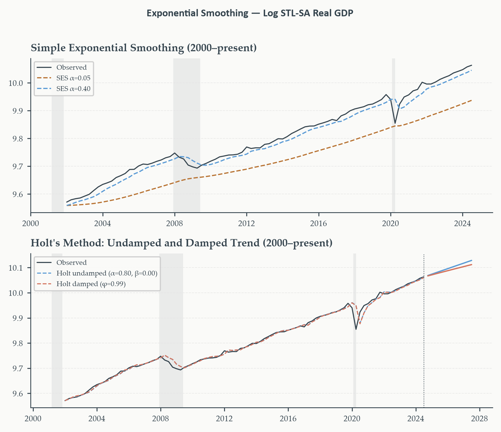
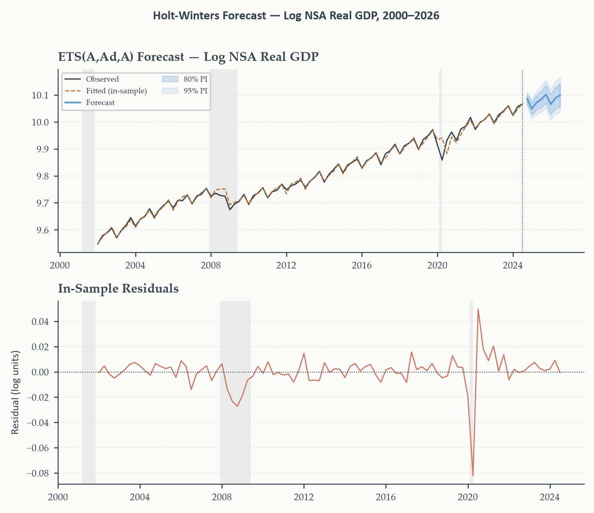
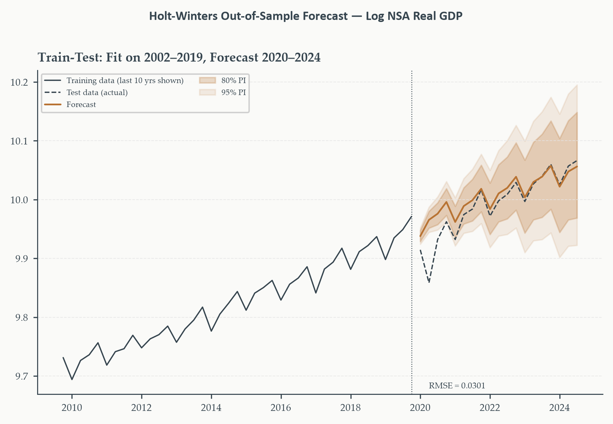

Chapter 2
2026-08-31
The releant question: Is output above or below where it ought to be?
Separating those two stories — trend versus deviation from trend — is what this chapter’s tools do. The Fed’s “output gap,” the BLS’s seasonally adjusted unemployment rate, every headline GDP number you read: all of them are decompositions, whether the reader realizes it or not.
Two families of tools to get the same result: separate the predictable, structural part of a series from what’s left over
The central lesson of this chapter: the business cycle is not a natural object waiting to be discovered. It is a construct whose shape depends entirely on the decomposition method chosen. Different reasonable choices — all methodologically defensible — disagree about whether the economy is currently overheating or slack.
Section 1
The Fed targets the “output gap.” The BLS reports a “seasonally adjusted” unemployment rate. Both phrases presuppose a decomposition — what is it doing?
Look at any macroeconomic series over a long horizon and three distinct patterns emerge:
Every major economic data release you have ever read in the news has already been passed through some form of decomposition before it reached you.
Decomposition. A representation of \(y_t\) as \(T_t\) (trend), \(S_t\) (seasonal), \(I_t\) (irregular):
Additive: \(\quad y_t = T_t + S_t + I_t\)
Multiplicative: \(\quad y_t = T_t \times S_t \times I_t\)
Additive assumes seasonal swings have a fixed size regardless of the series’ level — a $200B Q4 bump is the same whether GDP is $10T or $25T.
Multiplicative assumes seasonal swings scale with the level — a seasonal factor of 1.05 means “5% above trend,” growing in absolute terms as the series grows.
The two are the same model. \(\log y_t = \log T_t + \log S_t + \log I_t\) — multiplicative in levels is additive in logs. Since most economic series grow exponentially, we work in logs and apply additive methods throughout this chapter.
Two versions of the same underlying series:
NSA — Not Seasonally Adjusted
ND000334Q, BEA Table 8.1.6. The raw quarterly series — Q1 contracts (post-holiday), Q4 surges (holiday season, inventory builds). This is what we decompose.
SA — Seasonally Adjusted
GDPC1. What appears in every news report and policy document. Produced by the Census Bureau’s X-13-ARIMA-SEATS — our benchmark for comparison.
Units. GDPC1 is a Seasonally Adjusted Annual Rate (SAAR) — each quarter’s value is multiplied by 4. ND000334Q is a raw quarterly total. Plotting them together without converting NSA to SAAR first makes the SA series look four times larger for no economic reason.
Top: levels
NSA oscillates around the SA trend with growing amplitude over time.
Bottom: log levels
The oscillations are proportionally stable — confirming the multiplicative (log-additive) model is the right framework here.

Section 2
How do you estimate a “slow-moving trajectory” from noisy quarterly data?
The oldest, most transparent approach: replace each observation with a local average of the observations around it. Short-run wiggles cancel; whatever survives the averaging is the trend.
Whatever the moving average misses becomes the seasonal and irregular components — trend estimation and decomposition are the same operation, viewed from two sides.
For quarterly data (\(m=4\)), build the centered average in two steps. First, a 4-term average centered a half-period ahead of \(t\):
\[ M_t^+ = \tfrac{1}{4}(y_{t-1}+y_t+y_{t+1}+y_{t+2}) \]
and one centered a half-period behind:
\[ M_t^- = \tfrac{1}{4}(y_{t-2}+y_{t-1}+y_t+y_{t+1}) \]
Then average the two:
\[ \hat{T}_t = \tfrac{1}{2}(M_t^+ + M_t^-) = \tfrac{1}{8}y_{t-2}+\tfrac{1}{4}y_{t-1}+\tfrac{1}{4}y_t+\tfrac{1}{4}y_{t+1}+\tfrac{1}{8}y_{t-2} \]
Centered \(2\times4\) moving average.
\[ \hat{T}_t = \tfrac{1}{8}y_{t-2}+\tfrac{1}{4}y_{t-1}+\tfrac{1}{4}y_t+\tfrac{1}{4}y_{t+1}+\tfrac{1}{8}y_{t+2} \]
Two things this weighting scheme guarantees, and why both matter:
Averaging over exactly one full year of quarters removes any fixed seasonal pattern by construction — not as an empirical approximation. The monthly case (\(m=12\)) uses a \(2\times12\)-MA and follows identical logic.
Given \(\{y_t\}\) with seasonal period \(m\):
The moving average loses observations at both ends — \(\lfloor m/2\rfloor\) at the start and end of the sample. Every local-smoothing trend estimator pays this price; it becomes the central problem X-13 solves in Section 3.
No free parameter. The window width is fixed by \(m\) — there’s no way to make the trend smoother or rougher. The moving-average trend can absorb genuine business-cycle variation that we’d rather see preserved in the irregular component, precisely because nothing controls how much smoothing happens.
This is exactly why more flexible trend filters — HP, Hamilton, STL — have largely replaced simple moving averages in business cycle work, even though classical decomposition remains a useful, transparent first pass.

Top: observed (charcoal) vs. 2×4 MA trend (copper) — closely tracking. Middle: seasonal factors — large (\(\pm2\)–3%) and stable across nearly eighty years. Bottom: the irregular remainder, where the business cycle signal lives.
Section 3
Seasonal patterns are large, predictable, and economically uninteresting.
Nearly every headline number you read — the employment report, the GDP advance estimate, industrial production, housing starts — is seasonally adjusted before publication. The methodology behind that adjustment shapes the data everyone uses daily.
The US Census Bureau’s X-13-ARIMA-SEATS is the government standard. How doees it work?
X-11. A sophisticated iterative moving-average filter: estimate a basic trend-cycle, extract seasonal factors, remove them, re-estimate the trend on the adjusted series, re-estimate the seasonal factors — iterate until convergence.
The advance over classical decomposition (Section 2): X-11 applies different moving averages to different parts of the series, lets seasonal factors evolve slowly, and includes outlier detection.
This flexibility is exactly why official seasonal adjustments look smoother and more credible than the fixed-window classical decomposition we just built by hand.
The end-point problem. Every filter-based method loses observations near the ends of the sample — exactly where the most recent, policy-relevant data sit. Classical decomposition and X-11 alone both have this weakness.
Typical iterative procedure:
Alternative analytica procedure:
X-13 requires a dedicated binary maintained by the Census Bureau. What do we use for research and teaching, where portability matters?
STL — Seasonal-Trend decomposition using Loess. Implemented natively in statsmodels, no external dependency. Iterates between an inner loop (updates seasonal and trend given the current decomposition) and an outer loop (robustness weights, downweighting outliers).
The trend at each step comes from Loess — locally weighted polynomial regression, fitting a low-degree polynomial to a local neighborhood at each point. More flexible than a global moving average window, less prone to distortion near structural shifts.
Four user-controlled parameters: period (\(m\)), seasonal (width of the seasonal Loess window), trend (width of the trend Loess window), robust (outlier-resistant outer loop).
Where the two methods differ. STL treats the seasonal component as slowly varying but does not model calendar effects (trading days, Easter, holidays) — X-13 does. STL is additive by default; X-13 integrates ARIMA-based extension natively. STL is fully transparent, reproducible in Python; X-13 is an institutional standard with decades of accumulated logic.
For research and teaching: STL. For the official figures in a statistical release: X-13.
Same three-panel structure as classical decomposition — but the Loess trend is visibly more flexible.
Adapts to the 1970s productivity slowdown and the post-2008 recovery in ways a fixed-window moving average cannot.


STL-adjusted (copper dashed) closely tracks the official X-13-based SA series (blue). They differ most around structural breaks — 2008–09, 2020 — where X-13’s ARIMA extension and calendar adjustment add marginal precision.
Close enough to validate the approach. For research and teaching purposes, STL recovers essentially the same seasonally adjusted series the government publishes — using a fully transparent, reproducible method with no external dependency.
Section 4
“Up and down” relative to what? Relative to last period, growth rates always fluctuate — even in a healthy economy. Relative to a fixed level, the economy trends upward and never returns to its past level.
The only economically coherent benchmark is the trend — the economy’s long-run potential path. Deviations from that trend are what “business cycle” means.
The business cycle is not a natural object. It is a residual — whatever’s left after removing the trend. Since different methods produce different trends, they produce different business cycles. Whether the 1990s boom looks large or the 2001 recession looks shallow depends directly on which trend we chose.
The simplest trend model: output grows at a constant rate, deviations from that line are cyclical.
\[ \log y_t = \alpha + \beta t + \varepsilon_t \]
A natural extension lets the growth rate itself change:
\[ \log y_t = \alpha + \beta t + \gamma t^2 + \varepsilon_t \]
The residual \(\hat\varepsilon_t\) is the cyclical component either way — OLS finds the best-fitting line (or curve); whatever’s left over is “cycle.”
Both assume a purely deterministic trend — shocks are transitory, the series always reverts to a fixed path. But Chapter 1 established log real GDP is \(I(1)\): shocks are at least partly permanent. Imposing a deterministic trend on a unit-root process is misspecification — the trend chases the data, contaminating the extracted cycle.
The most widely used business-cycle tool in macroeconomics. Its appeal: a transparent optimization problem — find a smooth trend that tracks the data without following every wiggle.
\[ \min_{\{\tau_t\}}\left\{\sum_{t=1}^T (y_t-\tau_t)^2 + \lambda\sum_{t=2}^{T-1}\big[(\tau_{t+1}-\tau_t)-(\tau_t-\tau_{t-1})\big]^2\right\} \]
Hodrick-Prescott filter. Solves the minimization above for \(\{\hat\tau_t\}\). As \(\lambda\to0\): trend passes through every point (no smoothing). As \(\lambda\to\infty\): trend approaches a straight line (maximum smoothing). Conventional: \(\lambda=1600\) (quarterly), \(\lambda=14400\) (monthly).
Cyclical component: \(\hat{c}_t = y_t - \hat\tau_t\).
The second term penalizes the trend’s second difference — the discrete second derivative — resisting rapid acceleration or deceleration. Solution is linear in \(y\): \(\hat\tau=(I+\lambda K'K)^{-1}y\).
Simple to apply, transparent objective, cycles that broadly match NBER dates. This is why HP became the de facto standard — and why it’s taught in every graduate macro course.
James Hamilton (2018, Review of Economics and Statistics): “Why You Should Never Use the Hodrick-Prescott Filter.” Three fundamental problems.
1. Spurious cycles. Applying HP to a pure random walk — no cyclical component by construction — produces a cyclical residual with the same statistical properties as what practitioners report as real business cycles. The filter manufactures structure from noise.
2. End-point bias. The trend near the most recent observations is especially sensitive to \(\lambda\) — less data on one side to anchor it. Exactly when policymakers need reliable estimates, the HP cycle is least trustworthy.
3. Wrong-order penalty. The second-difference penalty assumes the trend is \(I(2)\). Log real GDP is \(I(1)\). HP solves the right optimization for the wrong class of process.
A regression, not a filter. Project \(y_{t+h}\) on the four most recent values of \(y\):
\[ y_{t+h} = \beta_0+\beta_1y_t+\beta_2y_{t-1}+\beta_3y_{t-2}+\beta_4y_{t-3}+\varepsilon_{t+h} \]
Use the OLS residual as the cyclical component. For quarterly GDP: \(h=8\) (two years ahead).
Advantages over HP. Robust to the order of integration — works whether \(I(1)\) or trend-stationary. No end-point bias: both ends of the sample lose observations symmetrically. No smoothing parameter to choose. Doesn’t generate spurious cycles from noise.
The tradeoff is interpretive: the Hamilton filter extracts a cycle at frequency \(1/h\) — for \(h=8\), a two-year horizon. Shorter than the conventional NBER cycle; it misses lower-frequency variation HP would retain. A feature, not a flaw — but one to be aware of.

HP (smoothest, compressed near the end — end-point bias in action). Hamilton (blank at the start by construction — needs \(h+{}\)lags of lead time; no end-point bias). Linear detrend (most volatile — forces the ’70s slowdown entirely into the cycle). STL irregular (noisiest, most unfiltered — the noise is the signal).
Run the HP filter on log SA GDP using only data through 2007 Q4 — the last pre-crisis quarter. Then run it again with data through 2024.
Real-time (2007 data only): the filter sees a long expansion with no future collapse to “know about.” Interprets 2004–2007 growth mostly as trend. Cycle: modest, \(+1\)–\(2\%\). Roughly at potential.
Full-sample (2024 data): the Great Recession is now in the sample, pulling the 2007 trend down. Same period’s cycle: \(+3\)–\(4\%\). Running considerably hotter than realized in real time.
The policy stakes are real. A central bank relying on the real-time HP cycle in 2006–2007 sees a roughly neutral output gap — a case for modest tightening at most. The same data, re-evaluated with hindsight, reveals significant overheating — a case for considerably more. This is not a statistical curiosity; it’s a live policy failure mode, concentrated exactly when estimates matter most.
Hamilton’s filter has no analogous problem: its cycle at date \(t\) depends only on observations well before \(t\), so real-time and full-sample estimates coincide by construction.
Section 5
Sections 2–4 were retrospective — given the full series, extract components by filtering or regression. What if the goal is genuinely to forecast forward?
Exponential smoothing methods form a weighted average of past observations, with weights declining geometrically the further back in time you go.
This is the first genuinely forward-looking tool in the textbook — everything before this point described the data; from here on, we’re building forecasting machinery on top of that description.
After each new observation, how should we revise our estimate of “where the series is right now”?
\[ \hat{y}_{t+1|t} = \hat{y}_{t|t-1} + \alpha\, e_t, \qquad e_t = y_t - \hat{y}_{t|t-1} \]
The adaptive-learning reading. Each new forecast adjusts the previous forecast by a fraction \(\alpha\) of how wrong it just was. Large \(\alpha\): aggressive updating, chase the latest observation. Small \(\alpha\): conservative, slow to react to any single surprise.
Equivalently, written as a weighted average of the new observation and the old forecast:
SES. Given \(\alpha\in(0,1)\):
\[ \hat{y}_{t+1|t} = \alpha y_t + (1-\alpha)\hat{y}_{t|t-1} \]
The \(h\)-step forecast is flat: \(\hat{y}_{T+h|T}=\hat{y}_{T+1|T}\) for all \(h\geq1\).
SES: Appropriate for series with no trend, no seasonality — for a persistently trending series like GDP, it always lags, perpetually catching up.
Holt: Add level and trend
Maintain a separate smoothed trend alongside the level:
\[ \begin{align} \hat{y}_{t+h|t} &= \hat{\ell}_t + \hat{b}_t h \\[4pt] \hat{\ell}_t &= \alpha y_t + (1-\alpha)(\hat{\ell}_{t-1}+\hat{b}_{t-1}) \\[4 pt] \hat{b}_t &= \beta(\hat{\ell}_t-\hat{\ell}_{t-1}) + (1-\beta)\hat{b}_{t-1} \end{align} \]
Forecast = current level \((hat{\ell})\) \(+\) trend \((\hat{b})\) \(\times\) horizon \((h)\)
Level = weighted average of the new observation and the previous level-plus-trend estimate
Trend = weighted average of this period’s implied trend \((\hat\ell_t-\hat\ell_{t-1})\) and the previous trend estimate
Two smoothing parameters now: \(\alpha\) (level) and \(\beta\) (trend). Small \(\beta\) — the model assumes the trend is persistent, changes slowly. Large \(\beta\) — the trend chases recent changes in slope.
An undamped linear trend, extrapolated far enough, eventually predicts absurd growth. What’s the fix?
Multiply the trend by a damping factor \(\phi\in(0,1)\) at each horizon:
\[ \hat{y}_{t+h|t} = \hat{\ell}_t + (\phi+\phi^2+\cdots+\phi^h)\hat{b}_t \]
At \(h=1\): identical to undamped Holt. As \(h\to\infty\): \(\sum\phi^i \to \phi/(1-\phi)\) — the forecast converges to a finite level instead of growing without bound.
Damping usually wins. Empirically, damped-trend forecasts outperform undamped ones at medium and long horizons — trends rarely persist at their most-recently-estimated slope. Damping is insurance against overextrapolation, and for a series as persistently trending as GDP, it’s almost always the more defensible default.

Top: SES with small \(\alpha\) lags considerably; larger \(\alpha\) tracks closely but jaggedly. Bottom: Holt’s undamped forecast (blue) extrapolates the recent slope linearly; the damped version (terracotta) flattens at longer horizons — visibly diverging from the undamped path as the horizon grows.
Section 6
SES, Holt, damped Holt — three separate methods so far. Is there a single organizing structure behind all of them?
ETS — Error, Trend, Seasonality. Each component can take different forms:
ETS(E,T,S) names a specific model. ETS(A,N,N) is SES. ETS(A,A,N) is undamped Holt. ETS(A,Ad,N) is damped Holt. What’s new: a formal statistical model — likelihood function, prediction intervals — for every combination, not just a heuristic update rule.
A third smoothing equation, alongside level and trend:
\[ \begin{align} \hat{y}_{t+h|t} &= \hat{\ell}_t + h\hat{b}_t + \hat{s}_{t+h-m(k+1)} \\[4pt] \hat{\ell}_t &= \alpha(y_t-\hat{s}_{t-m}) + (1-\alpha)(\hat{\ell}_{t-1}+\hat{b}_{t-1}) \\[4pt] \hat{b}_t &= \beta(\hat{\ell}_t-\hat{\ell}_{t-1}) + (1-\beta)\hat{b}_{t-1} \\[4pt] \hat{s}_t &= \gamma(y_t-\hat{\ell}_{t-1}-\hat{b}_{t-1}) + (1-\gamma)\hat{s}_{t-m} \end{align} \]
Level = weighted average of the de-seasonalized new observation and the previous level-plus-trend estimate
Trend = weighted average of this period’s implied trend \((\hat\ell_t-\hat\ell_{t-1})\) and the previous trend estimate
Seasonal = weighted average of the de-trended new observation and the same-season factor from one year ago
Forecast = level \(+\) trend \(\times\) horizon \(+\) matching seasonal factor
ETS(A,A,A) — Holt-Winters Additive. Three smoothing parameters \(\alpha,\beta,\gamma\in(0,1-\alpha)\) plus initial states, all estimated jointly by maximum likelihood.
Each equation has a parallel structure — blend new information with the extrapolated previous state:
This is ETS(A,A,A). The damped-trend version, ETS(A,Ad,A) — the model we’ll actually fit to GDP — multiplies the trend term by successive powers of \(\phi\), exactly as in Section 5.
For ETS(A,Ad,A), the \(h\)-step forecast:
\[ \begin{align} \hat{y}_{T+h|T} &= \text{estimated level} + \text{damped cumulative trend} + \text{matching seasonal factor} \\[4pt] \hat{y}_{T+h|T} &= \hat{\ell}_T + \left(\sum_{i=1}^h\phi^i\right)\hat{b}_T + \hat{s}_{T+h-m(k+1)} \end{align} \]
Take the last estimated level, add the damped cumulative trend correction, add the appropriate seasonal correction.
Prediction intervals. For ETS(A,N,N): \(\sigma_h^2 = \sigma^2[1+\alpha^2(h-1)]\) — growing with horizon, as it should. Every ETS model shares this property.
Prediction intervals are not confidence intervals. A 95% PI says 95% of future realizations will fall in the band — it accounts for forecast uncertainty (future innovations), not parameter or model uncertainty. Estimated-parameter intervals in practice run slightly too narrow.
ETS(A,Ad,A) fit through 2024 Q3, forecasting 8 quarters ahead.
Seasonal pattern extrapolated from estimated factors; trend damped — appropriate skepticism about persisting the recent growth rate.
80% and 95% prediction intervals widen with horizon, as required.
Bottom panel: in-sample residuals — the 2020 outlier is the model’s honest ignorance of COVID, not misspecification.

A model that fits beautifully in-sample tells us little about whether it forecasts well.
Fit on 1947–2019 Q4, forecast 20 quarters into 2020–2024 — a window that happens to contain COVID.
Large errors in 2020 Q1–Q2 reflect the pandemic being outside the support of any postwar-trained model — not a forecasting failure. The full machinery for forecast evaluation is Chapter 5’s job.

We built the chapter around two families of tools working on the same idea. Decomposition and filtering — additive/multiplicative models, classical moving-average decomposition, the institutional standard X-13-ARIMA-SEATS alongside its portable STL alternative, and the trend-filter debate between HP and Hamilton — all answering the same question: what is trend, and what is deviation from it? Exponential smoothing — SES, Holt, and the full Holt-Winters ETS framework — turned that decomposed structure into genuine forecasting machinery, complete with principled prediction intervals.
The central lesson threads through every section: the business cycle is not a natural object waiting to be discovered. It is a construct whose shape depends entirely on the decomposition we choose — and every method in this chapter makes that choice differently.
Chapter 3 develops the ARMA family — and provides the theoretical foundation the methods in this chapter borrowed without ever stating.
Simple exponential smoothing turns out to be the optimal forecast for an ARIMA(0,1,1) process. Holt’s method corresponds to ARIMA(0,2,2). Holt-Winters corresponds to a seasonal ARIMA. These are not coincidences — the entire ETS family sits inside the ARIMA family as a set of restricted special cases, and understanding that connection unlocks better model selection, residual diagnostics, and principled prediction intervals.
It also resolves the trend-cycle question this chapter never fully closed: Chapter 4’s Beveridge-Nelson decomposition uses a series’ estimated ARIMA structure to separate permanent and transitory components — no smoothing parameter to choose, no \(\lambda\) to defend, a cycle uniquely pinned down by the data itself.
ECON-5371 · Time Series Analysis and Forecasting